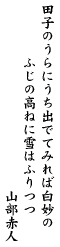

What is "The Ogura Hyakunin Issyu"?
--- It is a collection of old Japanese poems,
selected by Fujiwara-no-Teika.
"Ogura Hyakunin Issyu" contains poems of hundread poets,
one per poest.
"Hyakunin" means "hundread people", and
"Issyu" means "a poem".
"Ogura" is a name of place where Fujiwara-no-Teika
selected this poem collection.
This is an example of VFlib version 3 for the use of vertical writing fonts.
1. 2. 3. 4. 5.
For the meaning of these poems (in English), for example, refer to the http://etext.lib.virginia.edu/japanese/index/, Japanese Text Initiative at University Virginia and University Pittsburgh.